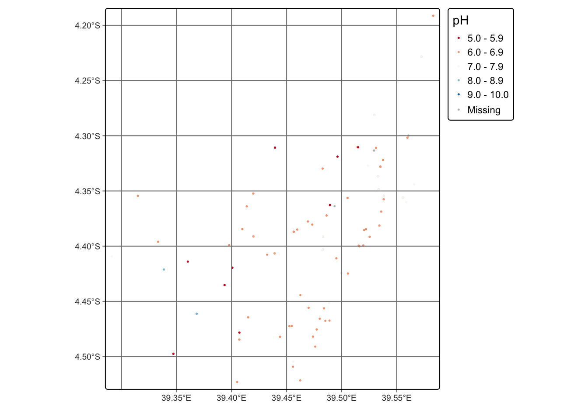
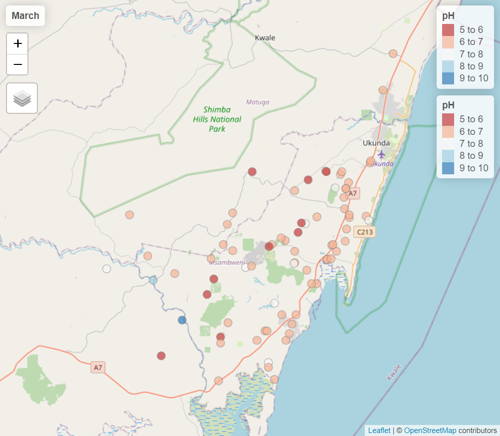

The goal of grdwtrsmpkwale is to provide datasets for research and planning of water and solid waste management in Kwale, Kenya. This package includes water anlaysis data collected in 2016 combined with the geospatial data from the collection points. The data is collected part of the project UPGro (Unlocking the Potential of Groundwater for the Poor) which aimed to improve the evidence and understanding of groundwater across Sub-Saharan Africa to help tackle poverty.
Installation
You can install the development version of ‘grdwtrsmpkwale’ from GitHub with:
# install.packages("devtools")
devtools::install_github("openwashdata/grdwtrsmpkwale")Alternatively, you can download the individual datasets as CSV or XLSX file from the table below.
| dataset | CSV | XLSX |
|---|---|---|
| water_samples | Download CSV | Download XLSX |
| selected_samples | Download CSV | Download XLSX |
Introduction
This dataset contains results of two sampling campaigns conducted in Kwale County Kenya in March and June 2016 by GHS/UPC as part of the Gro for GooD project.1
Water samples from over 79 groundwater and 6 surface water (SW) locations were analysed for major ions, stable isotopes, selected trace constituents, electrical conductivity, nitrates, ammonia, pH, DO (Dissolved Oxygen), Eh (oxidation / reduction potential), Temperature, TOC (Total Organic Carbon) and field alkalinity. Most locations were sampled in both March (dry season) and June (wet season).
Data
This data package has two datasets: water_samples and selected_samples.
water_samples
This dataset contains data from an analysis of groundwater in Kwale, Kenya. The data was collected once in March and once in June of 2016 for each sampling spot. In total 157 samples were taken in 71 different localisations that have their geospatial data included in this data package. The sample analysis includes different measurements including conductivity, temperature, pH-values and concentrations of different elements/molecules for the groundwater samples.
The water_samples data set has 80 variables and 157 observations. For an overview of the variable names, see the following table.
water_samples| variable_name | variable_type | description | unit_type | error |
|---|---|---|---|---|
| localization | character | Name of the localization where the sample was taken. | NA | NA |
| geology | character | Composition of the ground. | NA | NA |
| utm_x | character | Geospatial data of the water sampling locations. The geographic coordinate system ‘Arc 1960 / UTM zone 37S’ (EPSG:21037) which is used for the areas of Kenya and Tanzania - south of equator and east of 36°E. | Arc 1960 | NA |
| utm_y | character | Geospatial data of the water sampling locations. The geographic coordinate system ‘Arc 1960 / UTM zone 37S’ (EPSG:21037) which is used for the areas of Kenya and Tanzania - south of equator and east of 36°E. | Arc 1960 | NA |
| date | dttm | Date the sample was taken. | NA | NA |
| conductivity | double | Conductivity of the sample in (µS/cm) | (µS/cm) | NA |
| T_avg | double | Average ambient temperature at the time of the sampling | °C | NA |
| pH | double | Acidity/basicity of the sample using the pH value. | NA | NA |
| TOC | double | Total organic carbon (TOC) is an analytical parameter representing the concentration of organic carbon in a sample. | (mg/L) | NA |
| alkalinity | double | Alkalinity of the sample as mg of bicarbonate (HCO3) per liter (mg_HCO3/L). | as mg/L HCO3 | NA |
| DO | double | Dissolved oxygen (DO) levels in environmental water depend on the physiochemical and biochemical activities in water body and it is an important useful in pollution and waste treatment process control. | (mg/L) | NA |
| ORP | double | Oxidation reduction potential (ORP) in (mV). | mV | NA |
| eH | double | Redox potential (eH) in (mV). | mV | NA |
| NH4 | double | Ammonium concentration in (mg/L). | (mg/L) | NA |
| Cl | double | Chlorine concentration in (mg/L) | (mg/L) | 0.042 mg/L |
| SO4 | double | Sulfate concentration in (mg/L) | (mg/L) | 0.026mg/L |
| NO3 | double | Nitrate concentration in (mg/L) | (mg/L) | 0.005mg/L |
| PO4 | double | Phosphate concentration in (mg/L) | (mg/L) | 0,008 mg/L |
| Br | double | Bromine concentration in (mg/L) | (mg/L) | 0.004mg/L |
| F | double | Fluorine concentration in (mg/L) | (mg/L) | 0.024mg/L |
| Ca | double | Calcium concentration in (mg/L) | (mg/L) | 0.05 mg/L |
| Mg | double | Magnesium concentration in (mg/L) | (mg/L) | 0.05 mg/L |
| Na | double | Sodium concentration in (mg/L) | (mg/L) | 0.1 mg/L |
| K | double | Potassium concentration in (mg/L) | (mg/L) | 0.1 mg/L |
| Fe | double | Iron concentration in (mg/L) | (mg/L) | 0.05 mg/L |
| Si | double | Silicon concentration in (mg/L) | (mg/L) | 0.02 mg/L |
| Al | double | Aluminum concentration in (mg/L) | (mg/L) | 0.05 mg/L |
| S | double | Sulfur concentration in (mg/L) | (mg/L) | 0.05 mg/L |
| P | double | Phosphorus concentration in (mg/L) | (mg/L) | 0.1 mg/L |
| Li | double | Lithium concentration in parts per billion (ppb). | ppb | 0.08 ppb |
| Be | double | Beryllium concentration in parts per billion (ppb). | ppb | 0.08 ppb |
| B | double | Boron concentration in parts per billion (ppb). | ppb | 0.08 ppb |
| Sc | double | Scandium concentration in parts per billion (ppb). | ppb | 0.08 ppb |
| Ti | double | Titanium concentration in parts per billion (ppb). | ppb | 0.08 ppb |
| V | double | Vanadium concentration in parts per billion (ppb). | ppb | 0.08 ppb |
| Cr | double | Chromium concentration in parts per billion (ppb). | ppb | 0.08 ppb |
| Mn | double | Manganese concentration in parts per billion (ppb). | ppb | 0.08 ppb |
| Co | double | Cobalt concentration in parts per billion (ppb). | ppb | 0.08 ppb |
| Ni | double | Nickel concentration in parts per billion (ppb). | ppb | 0.08 ppb |
| Cu | double | Copper concentration in parts per billion (ppb). | ppb | 0.08 ppb |
| Zn | double | Zinc concentration in parts per billion (ppb). | ppb | 0.08 ppb |
| Ga | double | Gallium concentration in parts per billion (ppb). | ppb | 0.08 ppb |
| Ge | double | Germanium concentration in parts per billion (ppb). | ppb | 0.08 ppb |
| As | double | Arsenic concentration in parts per billion (ppb). | ppb | 0.08 ppb |
| Se | double | Selenium concentration in parts per billion (ppb). | ppb | 0.08 ppb |
| Rb | double | Rubidium concentration in parts per billion (ppb). | ppb | 0.08 ppb |
| Sr | double | Strontium concentration in parts per billion (ppb). | ppb | 0.08 ppb |
| Y | double | Yttrium concentration in parts per billion (ppb). | ppb | 0.08 ppb |
| Zr | double | Zirconium concentration in parts per billion (ppb). | ppb | 0.08 ppb |
| Nb | double | Niobium concentration in parts per billion (ppb). | ppb | 0.08 ppb |
| Mo | double | Molybdenum concentration in parts per billion (ppb). | ppb | 0.08 ppb |
| Cd | double | Cadmium concentration in parts per billion (ppb). | ppb | 0.08 ppb |
| Sn | double | Tin concentration in parts per billion (ppb). | ppb | 0.08 ppb |
| Sb | double | Antimony concentration in parts per billion (ppb). | ppb | 0.08 ppb |
| Cs | double | Cesium concentration in parts per billion (ppb). | ppb | 0.08 ppb |
| Ba | double | Barium concentration in parts per billion (ppb). | ppb | 0.08 ppb |
| La | double | Lanthanum concentration in parts per billion (ppb). | ppb | 0.08 ppb |
| Ce | double | Cerium concentration in parts per billion (ppb). | ppb | 0.08 ppb |
| Pr | double | Praseodymium concentration in parts per billion (ppb). | ppb | 0.08 ppb |
| Nd | double | Neodymium concentration in parts per billion (ppb). | ppb | 0.08 ppb |
| Sm | double | Samarium concentration in parts per billion (ppb). | ppb | 0.08 ppb |
| Eu | double | Europium concentration in parts per billion (ppb). | ppb | 0.08 ppb |
| Gd | double | Gadolinium concentration in parts per billion (ppb). | ppb | 0.08 ppb |
| Tb | double | Terbium concentration in parts per billion (ppb). | ppb | 0.08 ppb |
| Dy | double | Dysprosium concentration in parts per billion (ppb). | ppb | 0.08 ppb |
| Ho | double | Holmium concentration in parts per billion (ppb). | ppb | 0.08 ppb |
| Er | double | Erbium concentration in parts per billion (ppb). | ppb | 0.08 ppb |
| Tm | double | Thulium concentration in parts per billion (ppb). | ppb | 0.08 ppb |
| Yb | double | Ytterbium concentration in parts per billion (ppb). | ppb | 0.08 ppb |
| Lu | double | Lutetium concentration in parts per billion (ppb). | ppb | 0.08 ppb |
| Hf | double | Hafnium concentration in parts per billion (ppb). | ppb | 0.08 ppb |
| Ta | double | Tantalum concentration in parts per billion (ppb). | ppb | 0.08 ppb |
| W | double | Wolfram concentration in parts per billion (ppb). | ppb | 0.08 ppb |
| Tl | double | Thallium concentration in parts per billion (ppb). | ppb | 0.08 ppb |
| Pb | double | Lead concentration in parts per billion (ppb). | ppb | 0.08 ppb |
| Bi | double | Bismuth concentration in parts per billion (ppb). | ppb | 0.08 ppb |
| Th | double | Thorium concentration in parts per billion (ppb). | ppb | 0.08 ppb |
| U | double | Uranium concentration in parts per billion (ppb). | ppb | 0.08 ppb |
| delta_O_18 | double | The ratio of stable isotopes oxygen-18 (18O) and oxygen-16 (16O) as a measure of groundwater/mineral interactions. | NA | NA |
| delta_H_2 | double | δ2H, or delta deuterium, is a measure of the relative abundance of deuterium (a stable isotope of hydrogen) in a sample, often used in hydrology and environmental science to trace the origin and movement of water. | NA | NA |

Locations of sampling spots
selected_samples
This dataset contains data from an analysis of groundwater in Kwale, Kenya. The data was collected three weeks in a row at 8 different locations. The sample analysis includes measurements of conductivity, temperature, pH-values and concentrations of different elements/molecules.
The selected_samples data set has 69 variables and 24 observations. For an overview of the variable names, see the following table.
selected_samples| variable_name | variable_type | description | unit_type | error |
|---|---|---|---|---|
| code | character | Code of the sampling point: an abbreviation of the site name followed by the weekly sampling round (1 = 10 June, 2 = 18 June, 3 = 24 June 2016). | NA | NA |
| date | dttm | Date the sample was taken. | NA | NA |
| conductivity | double | Conductivity of the sample in (µS/cm) | (µS/cm) | NA |
| T_avg | double | Average ambient temperature at the time of the sampling | °C | NA |
| pH | double | Acidity/basicity of the sample using the pH value. | NA | NA |
| Cl | double | Chlorine concentration in (mg/L) | (mg/L) | 0.042 mg/L |
| SO4 | double | Sulfate concentration in (mg/L) | (mg/L) | 0.026mg/L |
| NO3 | double | Nitrate concentration in (mg/L) | (mg/L) | 0.005mg/L |
| PO4 | double | Phosphate concentration in (mg/L) | (mg/L) | 0,008 mg/L |
| Br | double | Bromine concentration in (mg/L) | (mg/L) | 0.019mg/L |
| F | double | Fluorine concentration in (mg/L) | (mg/L) | 0.024mg/L |
| Ca | double | Calcium concentration in (mg/L) | (mg/L) | 0.05 mg/L |
| Mg | double | Magnesium concentration in (mg/L) | (mg/L) | 0.05 mg/L |
| Na | double | Sodium concentration in (mg/L) | (mg/L) | 0.1 mg/L |
| K | double | Potassium concentration in (mg/L) | (mg/L) | 0.1 mg/L |
| Fe | double | Iron concentration in (mg/L) | (mg/L) | 0.05 mg/L |
| Si | double | Silicon concentration in (mg/L) | (mg/L) | 0.02 mg/L |
| Al | double | Aluminum concentration in (mg/L) | (mg/L) | 0.05 mg/L |
| S | double | Sulfur concentration in (mg/L) | (mg/L) | 0.05 mg/L |
| P | double | Phosphorus concentration in (mg/L) | (mg/L) | 0.1 mg/L |
| Li | double | Lithium concentration in parts per billion (ppb). | ppb | 0.08 ppb |
| Be | double | Beryllium concentration in parts per billion (ppb). | ppb | 0.08 ppb |
| B | double | Boron concentration in parts per billion (ppb). | ppb | 0.08 ppb |
| Sc | double | Scandium concentration in parts per billion (ppb). | ppb | 0.08 ppb |
| Ti | double | Titanium concentration in parts per billion (ppb). | ppb | 0.08 ppb |
| V | double | Vanadium concentration in parts per billion (ppb). | ppb | 0.08 ppb |
| Cr | double | Chromium concentration in parts per billion (ppb). | ppb | 0.08 ppb |
| Mn | double | Manganese concentration in parts per billion (ppb). | ppb | 0.08 ppb |
| Co | double | Cobalt concentration in parts per billion (ppb). | ppb | 0.08 ppb |
| Ni | double | Nickel concentration in parts per billion (ppb). | ppb | 0.08 ppb |
| Cu | double | Copper concentration in parts per billion (ppb). | ppb | 0.08 ppb |
| Zn | double | Zinc concentration in parts per billion (ppb). | ppb | 0.08 ppb |
| Ga | double | Gallium concentration in parts per billion (ppb). | ppb | 0.08 ppb |
| Ge | double | Germanium concentration in parts per billion (ppb). | ppb | 0.08 ppb |
| As | double | Arsenic concentration in parts per billion (ppb). | ppb | 0.08 ppb |
| Se | double | Selenium concentration in parts per billion (ppb). | ppb | 0.08 ppb |
| Rb | double | Rubidium concentration in parts per billion (ppb). | ppb | 0.08 ppb |
| Sr | double | Strontium concentration in parts per billion (ppb). | ppb | 0.08 ppb |
| Y | double | Yttrium concentration in parts per billion (ppb). | ppb | 0.08 ppb |
| Zr | double | Zirconium concentration in parts per billion (ppb). | ppb | 0.08 ppb |
| Nb | double | Niobium concentration in parts per billion (ppb). | ppb | 0.08 ppb |
| Mo | double | Molybdenum concentration in parts per billion (ppb). | ppb | 0.08 ppb |
| Cd | double | Cadmium concentration in parts per billion (ppb). | ppb | 0.08 ppb |
| Sn | double | Tin concentration in parts per billion (ppb). | ppb | 0.08 ppb |
| Sb | double | Antimony concentration in parts per billion (ppb). | ppb | 0.08 ppb |
| Cs | double | Cesium concentration in parts per billion (ppb). | ppb | 0.08 ppb |
| Ba | double | Barium concentration in parts per billion (ppb). | ppb | 0.08 ppb |
| La | double | Lanthanum concentration in parts per billion (ppb). | ppb | 0.08 ppb |
| Ce | double | Cerium concentration in parts per billion (ppb). | ppb | 0.08 ppb |
| Pr | double | Praseodymium concentration in parts per billion (ppb). | ppb | 0.08 ppb |
| Nd | double | Neodymium concentration in parts per billion (ppb). | ppb | 0.08 ppb |
| Sm | double | Samarium concentration in parts per billion (ppb). | ppb | 0.08 ppb |
| Eu | double | Europium concentration in parts per billion (ppb). | ppb | 0.08 ppb |
| Gd | double | Gadolinium concentration in parts per billion (ppb). | ppb | 0.08 ppb |
| Tb | double | Terbium concentration in parts per billion (ppb). | ppb | 0.08 ppb |
| Dy | double | Dysprosium concentration in parts per billion (ppb). | ppb | 0.08 ppb |
| Ho | double | Holmium concentration in parts per billion (ppb). | ppb | 0.08 ppb |
| Er | double | Erbium concentration in parts per billion (ppb). | ppb | 0.08 ppb |
| Tm | double | Thulium concentration in parts per billion (ppb). | ppb | 0.08 ppb |
| Yb | double | Ytterbium concentration in parts per billion (ppb). | ppb | 0.08 ppb |
| Lu | double | Lutetium concentration in parts per billion (ppb). | ppb | 0.08 ppb |
| Hf | double | Hafnium concentration in parts per billion (ppb). | ppb | 0.08 ppb |
| Ta | double | Tantalum concentration in parts per billion (ppb). | ppb | 0.08 ppb |
| W | double | Wolfram concentration in parts per billion (ppb). | ppb | 0.08 ppb |
| Tl | double | Thallium concentration in parts per billion (ppb). | ppb | 0.08 ppb |
| Pb | double | Lead concentration in parts per billion (ppb). | ppb | 0.08 ppb |
| Bi | double | Bismuth concentration in parts per billion (ppb). | ppb | 0.08 ppb |
| Th | double | Thorium concentration in parts per billion (ppb). | ppb | 0.08 ppb |
| U | double | Uranium concentration in parts per billion (ppb). | ppb | 0.08 ppb |
Example
sf_samples <- water_samples |>
mutate(date = ymd(date)) |>
mutate(month = month(date), .after = date) |>
drop_na(month) |>
st_as_sf(coords = c("utm_x", "utm_y"), crs = 21037) |>
st_transform(crs = 4236)
tmap_mode("view")
tm_shape(sf_samples) +
tm_dots(col = "pH", size = 0.1, alpha = 0.7, palette = "RdBu") +
tm_facets(by = "month", as.layers = TRUE) +
tm_layout(panel.labels = c("March", "June"))
Screenshot of an interactive map with OpenStreetMap layer.
License
Data are available as CC-BY.
Citation
#> To cite package 'grdwtrsmpkwale' in publications use:
#>
#> Loos S, Zhong M, Hope R (2023). "grdwtrsmpkwale: Groundwater analysis
#> from 2016 in Kwale, Kenya." doi:10.5281/zenodo.10016874
#> <https://doi.org/10.5281/zenodo.10016874>.
#> <https://github.com/openwashdata/grdwtrsmpkwale>.
#>
#> A BibTeX entry for LaTeX users is
#>
#> @Misc{loos_etall:2023,
#> title = {grdwtrsmpkwale: Groundwater analysis from 2016 in Kwale, Kenya},
#> author = {Sebastian Camilo Loos and Mian Zhong and Rob Hope},
#> year = {2023},
#> doi = {10.5281/zenodo.10016874},
#> url = {https://github.com/openwashdata/grdwtrsmpkwale},
#> abstract = {The goal of grdwtrsmpkwale is to provide datasets for research and planning of water and solid waste management in Kwale, Kenya. This package includes water analysis data collected in 2016 combined with the geospatial data from the collection points.},
#> keywords = {open data,washdata,groundwater,water quality,Kwale,Kenya,groundwater-data,kenya,opendata,openwashdata,r},
#> version = {0.0.1},
#> }Related References
[1] Ferrer et al, “First step to understand the importance of new deep aquifer pumping regime in groundwater system in a developing country, Kwale, Kenya”, Geophysical Research Abstracts, Vol. 18, EGU2016-16969, 2016; Poster Avaiblable: https://upgro.files.wordpress.com/2015/09/egu16_groforgood_v1.pdf; UPC - The Departement of Civil Enginyering de la Universitat Politecnica de Catalunya GHS - Grupo de Hidrologia Subterranea